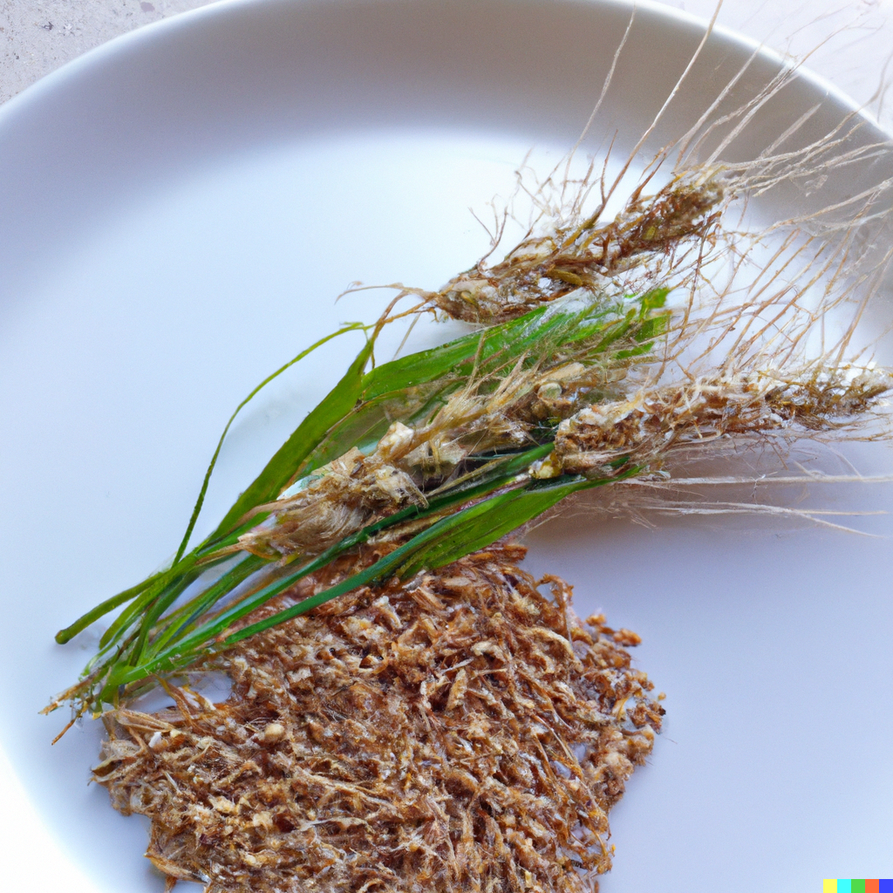

Wheat Grass

Description
This recipe involves taking two very different items
and combining them in an attempt to create a wonderful
experience for any food conoscere.
I hope you enjoy!
Ingredients
Steps
- Put Wheat onto a plate.
- Put Grass onto the same plate. (This step
cannot be skipped!)
- Devour whole.
Back to Recipes